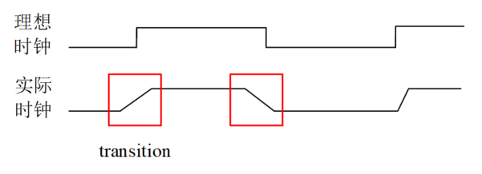
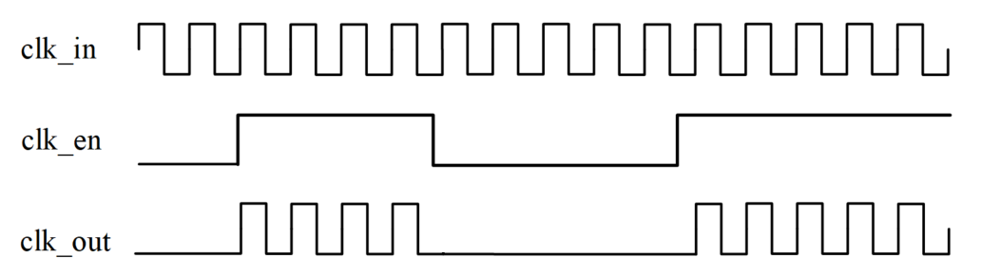
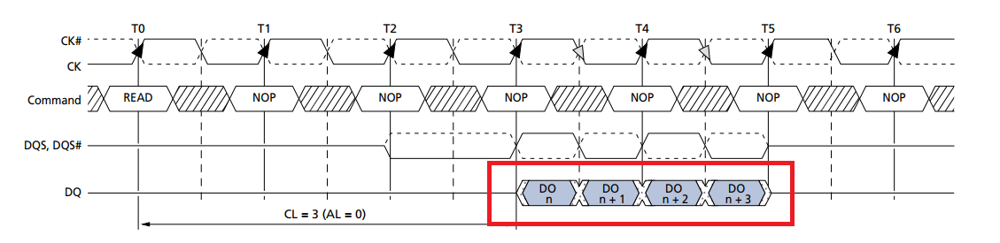

Keywords: Clock Source, Clock Skew, Clock Jitter, Clock Transition Time, Clock Latency, Clock Tree, Dual-Edge Clock
Almost any slightly complex digital design is inseparable from clocks. Clocks are also the foundation of all sequential logic. When introducing setup time and hold time earlier, the concept of clock skew was also touched upon. Below, we will summarize the knowledge about clocks to better perform digital design.
Clock Source
Depending on the position of the clock source in the digital design module, clock sources can be divided into external clock sources and internal clock sources.
External clock source:
RC/LC oscillator circuit: It uses positive or negative feedback circuits to generate periodically varying clock signals. This type of clock source has a simple circuit and a wide frequency range, but the operating frequency is low and stability is not high.
Passive/active crystal oscillator: It uses the piezoelectric effect of quartz crystals (pressure and electrical signals can be converted into each other) to generate resonant signals. This type of clock source has high frequency accuracy, good stability, low noise, and small temperature drift. Active oscillators often also incorporate voltage control or temperature compensation, giving the clock good phase and frequency characteristics. However, the circuit implementation is relatively complex, the frequency band is narrow, and the frequency is basically non-adjustable.

When debugging specific circuits, clock sources generated by some specially constructed circuits (such as Schmitt triggers) or signal generator equipment are often used.
Internal clock source:
Phase Locked Loop (PLL):
It uses an externally input reference signal to control the frequency and phase of the oscillation signal inside the loop, achieving automatic tracking of the output signal frequency to the input signal frequency, and multiplies the signal to a higher fixed frequency through a feedback path.
Ordinary crystal oscillators, due to process and cost reasons, cannot achieve very high frequencies. Using a PLL circuit can achieve a stable and high-frequency clock. Integrating a PLL inside the design module can ensure good delay and stability for digital circuits.
Clock division:Some modules operate at a frequency lower than the system clock frequency. In this case, the system clock needs to be divided to obtain a lower-frequency clock.
Counting and outputting clock signals in an always block is a common method for frequency dividers. For the implementation logic of arbitrary division ratios, see the next section, "5.3 Clock Division".
Clock switching:The operating frequency of the system or certain modules sometimes changes under specific conditions, for example, frequency reduction is needed in low-power mode, and frequency increase is needed to improve computing capability. In such cases, the system often has multiple clock sources for clock switching when needed.
If clock switching logic is not optimized, glitch/spike interference is likely to occur during the switching transition period, adversely affecting the circuit. For safe switching logic, see the later chapter: "5.4 Clock Switching".
Digital systems often adopt a scheme of external crystal oscillator input and internal PLL frequency multiplication. Then clock division or clock switching is performed according to design requirements.
Clock Characteristics
During simulation, all synchronous clocks are ideal: clock transitions are instantaneous, clock edges between modules are aligned, with no delay and no jitter. In actual circuits, clocks have delay during transmission and switching. A perfect digital design should also consider these imperfect clock characteristics, otherwise it may cause timing violations in the design.
The following is a brief description of some clock characteristics.
Clock Skew
Due to net delay, when the clock signal reaches flip-flop ports, it cannot be guaranteed that the clock edges at different flip-flop ports are aligned, that is, the clock phases at different flip-flop ports differ. This difference is called clock skew. The schematic diagram is as follows:

Generally, clock skew has no direct relationship with clock frequency; it is related to factors such as routing length, load capacitance, and number of loads.
Clock Jitter
Relative to the ideal clock edge, the offset in an actual clock that does not accumulate over time and is sometimes ahead and sometimes behind is called clock jitter. Clock jitter can be quantitatively described by jitter frequency and jitter amplitude. In digital design, clock jitter is always described in terms of time. The schematic diagram is as follows.

Clock jitter can be divided into random jitter and deterministic jitter.
Random jitter originates from thermal noise, semiconductor process, etc.
Deterministic jitter originates from switching power supplies, electromagnetic interference, or other unreasonable placement and routing, etc.
In the synthesis tool Design Compiler, clock skew and jitter are uniformly represented by the uncertainty value.
Transition Time
When the clock transitions from a rising edge to a falling edge, or from a falling edge to a rising edge, the level transition is not an instantaneous "straight up and down" without requiring time; instead, it is "ramp-like" and requires a transition time to complete the level change. This transition time is called the clock transition time. The schematic diagram is as follows.

The magnitude of the transition time is related to cell library process, capacitive load, etc.
Clock Latency
The delay time of the clock from the clock source (e.g., crystal oscillator, PLL, or frequency divider output) to the flip-flop port is called clock latency. Clock latency includes source latency and network latency, as shown in the figure below.

Source latency is the propagation time of the clock signal from the actual clock origin to the clock definition point of the design module. In the figure above, it is shown as 3ns.
Network latency is the propagation time from the clock definition point of the design module to the clock terminal of the flip-flop inside the module. The propagation path may pass through a buffer. In the figure above, it is shown as 1ns.
Source latency is the delay common to all flip-flops in the design module, so it does not affect clock skew.
Clock Tree
In digital design, each module should use synchronous clock circuits. In a synchronous circuit, flip-flops driven by the same clock signal together form a clock domain. In an ideal circuit, the clock signal would arrive at the clock terminals of all flip-flops in the same clock domain simultaneously. However, in practice, due to various delays, this delay-free clock characteristic is difficult to achieve. Moreover, the driving capability of a clock signal is limited, making it difficult to independently provide effective fan-out for a clock domain containing many flip-flops. To solve the problems of clock delay and driving, a clock tree system is needed to manage the clock signal, ensuring good timing and driving capability.
A clock tree is a network structure built by balancing many buffer cells. It is generally constructed from a single clock source point through stages of buffer cells. The actual clock tree structure with added clock buffers (the orange triangular modules in the figure) is shown below.

The clock tree is not used to reduce the time for the clock signal to reach each flip-flop, but to reduce the time difference among the arrivals at the flip-flops. Generally, backend designers complete the clock tree design by inserting clock buffers. Frontend designers usually need to ensure the correctness of the clock scheme and digital logic functionality.
Other clock classifications:
Synchronous and asynchronous clocks
"4.1 Synchronous and Asynchronous"contains a detailed explanation. When clocks share the same source and satisfy an integer multiple relationship, they can generally be considered synchronous. The definition of synchronous clocks in digital design is relatively broad. Logic within the same clock domain does not require synchronization processing.
Next, we understand the concept of a synchronous clock from the perspective of synchronous circuits.
A synchronous circuit is a circuit composed of sequential and combinational logic circuits. Its characteristic is that the clock terminals of all flip-flops are connected together and tied to the system clock terminal. The circuit state can change only when a clock pulse arrives. The changed state is maintained until the next clock pulse arrives. During this period, regardless of whether the external input x changes, each state in the state table is stable.
Gated Clock
The basic principle of a gated clock: when the enable signal is active, the clock is turned on. When the enable signal is inactive, the clock is turned off.

Because the gated clock can turn off the working clock at appropriate times, gated clocks are widely used in low-power design. The simplest implementation logic of a gated clock is to directly AND the enable signal with the clock signal, but this is unsafe and prone to glitches. For a detailed introduction to gated clocks, please refer to "6.4 RTL-Level Low-Power Design (Part 2)".
Dual-Edge Clock
Some modules can perform data transmission on both the rising and falling edges of the clock, achieving a doubled data rate.
DDR (Double Data Rate) SDRAM is a typical example of using dual-edge data transmission.
A typical DDR data transmission schematic is shown below.

Next, a simple simulation is performed on the behavior of dual-edge data transmission.
The basic design idea is to use the dual edges of the clock to read data, and then use a chip-select signal opposite to the clock to select and output the data, thereby completing data transmission on both clock edges.
The Verilog code description is as follows.
Example
input rstn ,
input clk,
input csn,
input [7:0] din,
input din_en,
output [7:0] dout,
output dout_en);
//capture at posedge
reg [7:0] datap_r ;
reg datap_en_r ;
always @(posedge clk or negedge rstn) begin
if (!rstn) begin
datap_r <= 'b0 ;
datap_en_r <= 1'b0 ;
end
else if (din_en) begin
datap_r <= din ;
datap_en_r <= 1'b1 ;
end
else begin
datap_en_r <= 1'b0 ;
end
end
//capture at negedge
reg [7:0] datan_r ;
reg datan_en_r ;
always @(negedge clk or negedge rstn) begin
if (!rstn) begin
datan_r <= 'b0 ;
datan_en_r <= 1'b0 ;
end
else if (din_en) begin
datan_r <= din ;
datan_en_r <= 1'b1 ;
end
else begin
datan_en_r <= 1'b0 ;
end
end
assign dout = !csn ? datap_r : datan_r ;
assign dout_en = datan_en_r | datap_en_r ;
endmodule
The testbench description is as follows, where the clock frequency of the dual-edge data transmission module is 100MHz, but the input data rate is 200MHz.
Example
module test ;
reg clk_100mhz, clk_200mhz ;
reg rstn ;
reg csn ;
reg [7:0] din ;
reg din_en ;
wire [7:0] dout ;
wire dout_en ;
always #(2.5) clk_200mhz = ~clk_200mhz ;
always @(posedge clk_200mhz)
clk_100mhz = ~clk_100mhz ;
initial begin
clk_100mhz = 0 ;
clk_200mhz = 0 ;
rstn = 0 ;
din = 0 ;
din_en = 0 ;
csn = 0 ;
//start work
#11 rstn = 1 ;
@(negedge clk_100mhz) ;
din_en = 1 ;
#0.2 ;
csn = 1 ; // When csn=1, output the data sampled on the falling edge.
//generate csn
forever begin
@(posedge clk_100mhz) ;
#0.2 ; //Add a slight delay to ensure correct data acquisition
csn = 0 ; //When csn=0, output data sampled on the rising edge
@(negedge clk_100mhz) ;
#0.2 ;
csn = 1 ; //When csn=1, output data sampled on the falling edge
end
end
always @(negedge clk_200mhz) begin
din <= {$random()} % 8'hFF ; //Generate random data for transmission
end
double_rate u_double_rate(
.rstn (rstn),
.clk (clk_100mhz),
.csn (csn),
.din (din),
.din_en (din_en),
.dout (dout),
.dout_en (dout_en));
initial begin
forever begin
#100;
if ($time >= 10000) $finish ;
end
end
endmodule // test
The simulation results for the first few data are as follows.
As can be seen from the figure, data transmission is normal, and the rate is twice the clock frequency.

This is only a simple simulation of data transmission on both clock edges, not a simulation of the DDR working principle. The working principle of DDR double data rate transmission is much more complex than this simulation.
However, in general, it is not recommended to use dual-edge clock logic, mainly for the following reasons.
In an always block, both rising and falling edges cannot be used as the sensitivity list, and the same variable cannot be assigned in two always blocks. For example, the following description is wrong. Although RTL compilation may not report an error, it cannot be synthesized into an actual circuit. This leads to difficulty in communication between signals.
always @(posedge clk or negedge clk) begin
The data transmission rate is twice the data clock frequency. If rising and falling edge logic is used for RTL modeling, a chip-select signal that toggles at the same rate as the clock is also required; if no chip-select signal is used, a same-source clock signal at twice the data clock frequency should be introduced inside the module to select data normally.
When dual-edge clock logic is used, proper constraints must be applied to both rising and falling edges. Clock constraints become complex, place-and-route requirements become stricter, and debugging difficulty increases.
Designing with dual clock edges requires high clock quality, and many factors must be considered when designing the clock tree.
Click me to share notes
<p style="font-size:14px;">The note must be an extension of the content of this article!</p><br> <p style="font-size:12px;"><a href="../tougao.html" target="_blank">For article submission, click here</a></p> <p style="font-size:14px;"><a href="./runoob-user-test-intro.html" target="_blank">How to obtain the registration invitation code</a></p> <h3 class="text-muted"><i class="fa fa-info-circle" aria-hidden="true"></i> You must <a href=".." class="runoob-pop">log in</a> before sharing notes!</h3> <p><a href="./runoob-user-test-intro.html" target="_blank">How to obtain the registration invitation code</a></p>